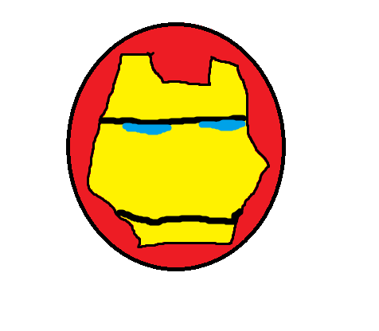

Here are our opinions on the Top 3 Super Heros based on abilities and popularity.
When mentioning superheroes, you can never make a list without Spiderman. Every kid ever has always wanted to be Spiderman at some point in their lives. He is one of the most emblematic and iconic superheroes of all time. Almost everyone likes him because of his superpowers, colors, and the values he represents. His powers include any ability of a proportionally big spider, such as climbing walls, shooting webs, and superstrength (this last one isn't really a spider ability, but it completes the superhero persona).
Batman is one of the darkest yet coolest episodes there is. When it comes to the comics and actual story, some people don't even believe he exists, which explains his ability to hide in the shadows. He is known mainly for the fact that he does not have superpowers like other heroes, but he has his gadgets and technique to fight which makes him almost unstoppable for any other average human being.
As well as the last superhero, he is recognized for not having powers like many others, but his intelligence, gadgets, and technology is where his power lies. He built his first suit out of almost scrapes and he has developed over time a suit that flies, uses repulsion cannons, and allows him to potentially increase his own strength. Ironman is one of the best superheroes there is.